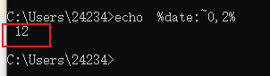
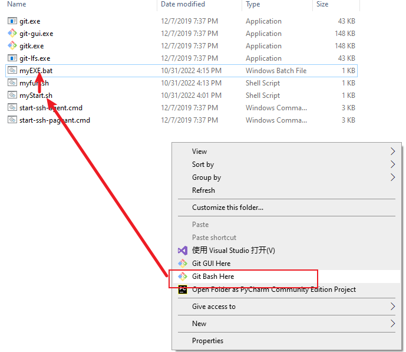

1. 目录
2. cmd(bat) 禁止使用
2.1. 用户输入----set /p
echo hello world
echo please enter y/n:
set /p flag=
::echo %flag%
if /i %flag% == y (echo “y”)^
else (echo “stop the procedure!”)
2.2. 定义变量set、字符串格式化
// copy.bat
:: 需要输入的参数
set sourcePathRoot=I:\dockerSharedFiles\aosp_android1000_r17\aosp_android1000_r17
set subPath=frameworks\base\core
md %subPath%
xcopy %sourcePathRoot%\%subPath% %subPath% /s/y/h
2.3. 拼接字符串 %
见上
2.4. 使用bat批处理文件启动.exe程序
// myStart.bat
echo "this is myStart.bat"
start E:\Snipaste-2.7.3-Beta-x64\Snipaste.exe
start E:\AutoHotKey\myAutoHotKey.ahk
@ping -n 20 127.1>nul 2>nul
2.5. pause 20s
::pause 20s
@ping -n 20 127.1>nul 2>nul
2.6. 休眠
rundll32 powrprof.dll,SetSuspendState
2.7. 文件夹操作
//删除文件夹
rd /s /q D:\local\braphic
//创建文件夹 ------>极优，可以创建多层
md D:\local\braphic
//拷贝（参数h表明包括隐藏文件） 注意：拷贝 bra下所有文件，不包括bra本身
xcopy Y:\foundation\bra D:\local\braphic\bra /s/y/h
pause
2.8. 文件操作
1、删除（优）del "H:\docker_install\DockerDesktop\DockerDesktop.vhdx"
可以解决删除系统文件时报错：

复制：
2.8.1. 写东西到文件里
例子1:
del "H:\docker_install\Dockerfile\Dockerfile"
echo FROM %Image%>> H:\docker_install\Dockerfile\Dockerfile
echo ^RUN^ ^echo^ ^'hi, cg. this is a ubuntu16.04_aosp1000_r17 image, clion is ok'^ ^>^ /home/cg, /readme.txt>> H:\docker_install\Dockerfile\Dockerfile
结果

注意：例子2:

结果：

2.9. 获取系统时间，对字符串切片、拼接
C:\Users\24234>date
The current date is: 12/04/2022 Sun
--->echo %date:~0,2% 从0位置开始，共四个
结果：

又一个Ex:
C:\Users\24234>set date_time="%date:~6,4%%date:~0,2%%date:~3,2%%time:~0,2%%time:~3,2%"
C:\Users\24234>echo %date_time%
"202212041702"
C:\Users\24234>
2.10. CMD执行命令行时卡住的问题（假卡）
https://blog.csdn.net/qq_34254642/article/details/104641591
Windows下命令行窗口默认开启了“快速编辑模式”，在执行命令的时候我们会不小心在窗口上点一下导致出现一个白色的光标，因为开启了“快速编辑模式”所以只要当鼠标点击Cmd窗口任何区域就会自动进入编辑模式，然后程序向控制台输入内容甚至执行程序都会被阻塞住，导致看到了命令执行停止的现象
2.11. 已经编写好的脚本---复制源代码
有时候，需要把源码从
// copy.bat
:: 需要输入的参数
set sourcePathRoot=I:\dockerSharedFiles\aosp_android1000_r17\aosp_android1000_r17
set subPath=frameworks\base\core
md %subPath%
xcopy %sourcePathRoot%\%subPath% %subPath% /s/y/h
3. linux
3.1. 查看linux版本
cheng@67dddeb926ac:~$ lsb_release -a No LSB modules are available. Distributor ID: Ubuntu Description: Ubuntu 18.04.5 LTS Release: 18.04 Codename: bionic
3.2. 文件夹操作
删除文件夹
rm -rf ........
递归创建文件夹-p
mkdir -p files1/files2
拷贝：
//拷贝文件夹A下所有文件 到 文件夹B下 cp -r /home/packageA/* /home/cp/packageB/ 或 cp -r /home/packageA/. /home/cp/packageB/
//拷贝文件夹A 到 文件夹B ----> packageB文件夹下就有packageA文件夹 cp -r /home/packageA /home/packageB
--------> 简言之：下 即 /
大文件cp，显示进度：
rsync -v -r -h --progress KDE-Dev-Mobile-test.ova /data/chenjinke sending incremental file list KDE-Dev-Mobile-test.ova 10.56G 8% 59.09MB/s 0:29:37参考： https://www.dbs724.com/131021.html Linux下CP命令显示进度的全攻略（linuxcp显示进度）-数据运维技术 (dbs724.com)
查看文件夹大小（在当前文件夹下）
du -sh
3.3. 搜索
关于搜索文件、搜索文本内容， 规定：
-禁止在window下搜索文件、
-禁止在IDE中搜索文本（IDE 本身可能File不全、很多File里的文本搜不到）
---------> win也必须执行linux命令
规定：
linux的搜索，优很高的精确性 -----> 可以用来判定有无
3.4. 搜索文本
范围：view.java文件
grep “baidu” -nr view.java
文件范围：路径下所有文件
grep “baidu*” -nr ./
显示范围：
grep -C 5 ........ 显示上下5行
grep -B 5 ........ 显示前5行
grep -A 5 ........ 显示后5行
特别注意：grep可以搜二进制文件so的内容！！！！！！
$ grep "chenjinke" -nr ./ Binary file ./src/CMakeFiles/kwin.dir/effectloader.cpp.o matches Binary file ./src/CMakeFiles/kwin.dir/workspace.cpp.o matches Binary file ./bin/libkwin.so.5.27.4 matches
---------------------------> 应用技巧：
可以确定机器中的so是否有自己的改动(同反编译jar文件)
3.4.1. 搜索文件
find ./ -name "View*"
3.5. 搜索 MethodHandle 类对应的jar( 运行时处于哪个jar)-----极优
万能:查找目录下所有含 MethodHandle.class的jar文件
脚本一：验证OK
find . -iname "*.jar" | while read jarfile; do
jar -tf $jarfile | grep "MethodHandle.class"
if [ $? -eq 0 ]
then
echo "=====find class in jar: "$jarfile
fi
done
结果：
java/lang/invoke/MethodHandle.class
=====find class in jar: ./soong/.intermediates/libcore/mmodules/core_platform_api/core.platform.api.stubs/android_common/turbine/core.platform.api.stubs.jar
java/lang/invoke/MethodHandle.class
=====find class in jar: ./soong/.intermediates/libcore/mmodules/core_platform_api/core.platform.api.stubs/android_common/javac/core.platform.api.stubs.jar
java/lang/invoke/MethodHandle.class
=====find class in jar: ./soong/.intermediates/libcore/core-all-system-modules/android_common/modules/module.jar
java/lang/invoke/MethodHandle.class
=====find class in jar: ./soong/.intermediates/libcore/core-oj/android_common/turbine-combined/core-oj.jar
java/lang/invoke/MethodHandle.class
META-INF/TRANSITIVE/java/lang/invoke/MethodHandle.class
=====find class in jar: ./soong/.intermediates/libcore/core-oj/android_common/turbine/core-oj.jar // -----> 正确的结果
java/lang/invoke/MethodHandle.class
=====find class in jar: ./soong/.intermediates/libcore/core-oj/android_common/withres/core-oj.jar
java/lang/invoke/MethodHandle.class
=====find class in jar: ./soong/.intermediates/libcore/core-oj/android_common/javac/core-oj.jar
一法通万法：
1、手机文件系统中直接搜 ------> 一般情况下，搜不出来
-技巧： 2、1如果不行，把 system/framework 、system/apex 拉出来放到 linux下
脚本二：TODO: 脚本有问题！！！！
#!/bin/sh find_dir=$1 find_key=$2 jars=`find $find_dir -name '*.jar'` for jar in $jars do ret=`jar tvf $jar | grep $find_key` if [ "$?" = "0" ]; then echo -e "\\e[1;34m${jar}\\e[0m: \\n\\e[2;34m${ret}\\e[0m" fi done wars=`find $find_dir -name '*.war'` for war in $wars do ret=`jar tvf $war | grep $find_key` if [ "$?" = "0" ]; then echo -e "\\e[1;34m${war}\\e[0m: \\n\\e[2;34m${ret}\\e[0m" fi done-----------------> 执行：
./find_class.sh ./com.android.art.debug MethodHandle
3.6. sed 批量替换多个文件中的字符串
原文： https://www.runoob.com/w3cnote/linux-findtoreplace.html
语法格式
sed -i "s/原字符串/新字符串/g" `grep 原字符串 -rl 所在目录`
例子：
在当前目录下查找包含 baidu 的字符串，并将字符串 baidu 替换为 runoob
sed -i "s/baidu/runoob/g" `grep "baidu" -rl ./`
批量替换网址 libs.baidu.com 为 cdn.static.runoob.com：
sed -i "s/https:\/\/libs.baidu.com/https:\/\/cdn.static.runoob.com\/libs/g" `grep -rl "libs.baidu.com" ./`
3.7. 文件系统相关
df -a disk free 文件系统的free情况（空间使用情况）（虚拟文件系统，如proc和sysfs）
df -T /dev/cpu T是Type 显示文件 所处的文件系统类型
mount 挂载文件系统 -------> 指定 目录
mount 显示已挂载的文件系统
mount /dev/sdb1 /mnt/data 挂设备 -----> 目录
-记忆：mount骑上 -----> 一个文件系统 “骑” 在另一个上面，即挂载
3.8. 自动换源
https://cloud.tencent.com/developer/article/1880981
3.9. Ubutu 安装可视化界面 ，win10远程
1、步骤
https://blog.csdn.net/qq_15211883/article/details/105314929 windows 远程 ubuntu 桌面,遇到花屏问题的解决方法
https://blog.csdn.net/badboy_1990/article/details/121412618 Ubuntu Server 20.04安装桌面(图形界面)以及远程桌面
2、远程连接

或直接用window的远程桌面登录:输入ip 用户名,密码
注意点：安装xfce4 TODO: 当docker宿主在window上，这样连不上
3.10. Linux 系统初始化 自动化执行脚本
注：以下都是 系统初始化 级别的，不是用户登录级别的（只有一个系统初始化，但是可以有很多个 用户登录）
参考： https://blog.csdn.net/weixin_43772810/article/details/126760777 Ubuntu 20.04 设置开机自启脚本

3.10.1. 正常linux启动
使用 systemctl：
3.10.2. docker镜像下的linux
参考：
https://www.jianshu.com/p/ba9860bec1d4
https://blog.csdn.net/qq_42926722/article/details/127052028 Docker容器进入的4种方式
无法使用systemctl，只能通过docker exec：
docker run --detach .............
docker exec test_my /bin/bash /home/cjk/start.sh ..........
//start.sh封装你想要 开机执行的一切操作
一个注意点： --detach https://blog.csdn.net/F7ANTY/article/details/112384645
docker run --detach 正常情况下，run之后直接attach，进入容器了（run之后的脚本没法执行）: --detach使得不进入容器
没有detach时，会attach：

3.11. Linux 用户登录 自动化执行脚本
注：以下都是 用户登录 级别的，即:
新增一个用户登录，执行一次
3.11.1. 自动执行
先科普下 Linux 系统的四（六）个类似却又不同的文件：
/etc/profile：系统配置文件，用户登录时读取一次
/etc/bash.bashrc：系统配置文件 ，用户登录时读取一次，每次打开一个新终端会话时读取一次
~/.profile（~/.bash_profile、~/.bash_login）：用户配置文件，用户登录时读取一次
~/.bashrc：用户配置文件，用户登录时读取一次，每次打开一个新终端会话时读取一次
注意：
系统配置文件作用于全局，而用户配置文件仅针对当前登录的用户
先读取系统配置文件，再读取用户配置文件，用户配置文件的变量和表达式等都继承自系统配置文件
我是 Ubuntu OS，如果你是 Red Hat OS，请将 /etc/bash.bashrc 改成 /etc/bashrc
Ubuntu 本身没有 ~/.bash_profile，需要你自己创建同名文件，它只对 bash 有效，而 ~/.profile 作用于任何绑定的 shell 终端
对于 ~/.bash_profile、~/.bash_login、~/.profile，如果终端绑定的是 bash，则按照我书写的顺序进行读取（如果存在，就不继续读取）
-
出于个性化和最小干预原则考虑，通常我们只对 ~/ 目录下的终端配置文件进行读写操作，也就是 ~/.profile 每次登录只读取一次 ~/.bashrc 除了登录时读取，每次打开终端，执行 shell script 时都会读取一次
-----> 一句话总结：优先用~/.profile 和 ~/.bashrc
3.12. 运行.sh
标准： sh hello.sh
TODO: 如何双击执行呢？
3.12.1. 自定义函数，待使用
source + .sh
例子：
见
TODO: 自定義的function，如何自动补全？
3.13. 环境变量设置
临时
1、设置export
export ALL_PROXY='socks5://172.20.224.1:15901'
2、查看当前环境变量env （自然）3、删除 unset
unset ALL_PROXY
永久：
通过软连接
ln -s -f /usr/local/python-2.7.16/bin/python /usr/bin/python 软链接
3.14. 环境path 设置
vim ~/.bashrc
加入
// 可执行文件 的环境变量
export PATH=/home/chen.gang42/workingspace/Sdk/platform-tools:$PATH
// 动态库 的环境变量
export LD_LIBRARY_PATH=/home/chen.gang42/workingspace/software/QT5_6_2/5.6/gcc_64/lib
注意：动态库后面不需要加 :$LD_LIBRARY_PATH
因为系统环境里，没有初始化这个值。加了，会导致
LD_LIBRARY_PATH=/home/chen.gang42/workingspace/software/QT5_6_2/5.6/gcc_64/lib: ----> 错误
3.15. win下 全面以linux 命令替代 cmd命令
利用mobaXterm中bash，可以找到win所有路径 ----> 所以，都可以替代
关键问题：
//Windows路径----> Linux的路径
转化：
function my_win2linux_path
{
# usage: my_win2linux_path "C:\Users\asus\Anaconda3"
win_path=$1 # 脚本的第一个参数就是windows路径
#win_path="C:\Users\asus\Anaconda3" # 一个示例路径
tmp_path=${win_path/:/} # 将冒号删掉
tmp_path=${tmp_path//\\/\/} # 将\\替换为/
disk_id=${tmp_path:0:1} # 取出第一个字母，也就是C盘的C，冒号后面第一个0指的是从下标为0的地方开始提取，第二个冒号后面的1表示提取一个字母
disk_id=$(echo $disk_id | tr [:upper:] [:lower:]) # 大写转小写
#echo $disk_id
other_path=${tmp_path:1} # 路径中除了磁盘以外的部分
linux_path="/drives/"${disk_id}${other_path} # 需要将/mnt/接在路径最前方
echo "windows path is "${win_path}
echo "linux path is "${linux_path}
}
3.16. Linux设备间-----远程拷贝文件
- 从本地主机复制文件至远程节点 // 验证ok
scp local_file remote_username@remote_ip:remote_folder
scp local_file remote_username@remote_ip:remote_file
scp local_file remote_ip:remote_folder
scp local_file remote_ip:remote_file
- 从远程节点复制文件至本地主机
scp remote_username@remote_ip:remote_file local_folder
scp remote_username@remote_ip:remote_file local_file
scp remote_ip:remote_file local_folder
scp remote_ip:remote_file local_file
- 从本地主机复制目录至远程节点 // 验证ok ----> 优选
scp -r local_folder remote_username@remote_ip:remote_folder
scp -r local_folder remote_ip:remote_folder
- 从远程节点复制目录至本地主机
scp -r remote_username@remote_ip:remote_folder local_folder
scp -r remote_ip:remote_folder local_folder
scp------------secure copy 安全拷贝
使用的是SSH协议
例子：
scp -r alps2.tar non.jinxi@10.82.254.194:/home/non.jinxi/code/chenjinke
参考：https://blog.csdn.net/xuwenpeng/article/details/133338342 Linux学习之远程拷贝数据命令
3.17. 压缩 & 解压缩
//压缩：
tar -cvf test.tar test/* //归档test目录下所有文件
//解
tar -xvf test.tar
tar -xvf test.tar -C ./laji //到特定目录
3.18. linux目录共享给 win-------Samba
Samba环境搭建：
https://blog.csdn.net/weixin_44147894/article/details/130225195 笔记-Samba服务器的安装与配置
-------> 验证ok
3.19. linux1 目录共享给 linux2-------sshfs
注意： linux2可以是 win下的虚拟机
win里有个linux虚拟机，
（1）在本地虚拟机敲入：
远程 本地
sudo sshfs -p 2002 -o cache=yes,allow_other non.jinxi@10.81.19.141:/data/non.jinxi /home/jx_nong/141server
sudo sshfs -p 22 -o cache=yes,allow_other non.jinxi@10.85.251.194:/home/non.jinxi/code /home/chenjinke/workingSpace/nongRemote
sudo sshfs -p 2002 -o cache=yes,allow_other chen.jinke42@10.81.19.141:/data/chen.jinke42/workingspace /home/chenjinke/workingSpace/chenjinke141
注意：原理是通过ssh链接的，所以
1、远端要有ssh服务
2、ssh的端口要对
（2）然后输入远程Linux密码 （如果sshfs找不到，换阿里源再sudo apt install sshfs）
（3）刷新：cd上一级
------------------> 本地PC任何写入加码， 如何绕过？
方法一：思想：通过141绕过win对写的限制： （1）win对其他所有机器写有限制 （2）对linux141没有 ---->绕过点 （3）通过中间linux来同步linux141和linux_target
最终结果： 写入linux141代码，在linux_target上编译（通过中间linux同步） -------> 可见，各取所长
方法二：两个linux之间直接同步 -------> 前提：？？？？？？
3.20. linux目录共享给win-------sshfs（效果类似于samba）
1、sshfs
2、Samba
1、 安装WinFsp 和 SSHFS-Win
2、添加映射：
例子：将docker容器内 文件夹分享给宿主win
验证OK：
\\sshfs.r\chenjinke@127.0.0.1!20000\home\chenjinke //特别注意： （1）端口号 前为！ // (2) 20000是因为 20000映射到linux 20 // 127.0.0.1!20000 是window ssh登录docker容器的入口
注意：
inux不需要做任何事情------> 原因：原理基于ssh的，本来就OK
所以：
samba搞不定的情况下，可以用sshfs
参考：
https://blog.csdn.net/guyuealian/article/details/128790112 Windows sshfs挂载远程文件夹
3.21. del_linux与win传输文件（不优）------FileZilla：
即：异步共享
作用：
补充Samba、sshfs -------> 实时
教程：--------------> 验证ok
如果ssh功能ok，在新建站点时，协议选择 FTP-ssh ---------》 原理：基于ssh，
好处：不用在server端新配置FTP服务
FileZilla非实时性：手动上传与下载

参考：https://blog.csdn.net/m0_73192864/article/details/135271902
3.22. win下看linux桌面--------xrdp
xrdp 的安装步骤：
sudo apt-get install xrdp
sudo adduser xrdp ssl-cert
sudo systemctl restart xrdp
用Xterm的RDP接入，win与linux可以相互copy
3.22.1. 问题： 通过Xrdp 复制粘贴失效
问题：
本地电脑和服务器之间复制粘贴
本地电脑问题：1、未打开剪贴板功能
服务器问题：xrdp-chansrv 进程变成 进程STAT列会显示Z（僵尸进程）
方法一：
图形化注销用户Log out后重新登录 -----> 验证ok
方法二：
方法一 等价于 用户级(进程所属的用户)： sudo pkill -KILL -u chen
方法三：
自然，
重启机器也是ok的
参考： Xrdp远程桌面链接登录ubuntu无法复制，解决方法_xrdp-chansrv-CSDN博客 https://blog.csdn.net/buzhidaoOWO/article/details/132197790
3.23. win下看linux桌面--------vnc
见《docker容器安装图形桌面》
3.24. linux突破物理内存的限制------swap分区
设置32G
原理：
当内存满了，把物理内存里的东西，换到swap分区（所以，必然硬盘？）里 -----> 不会OOM了
本质： 用物理磁盘替代 部分不用的物理内存
目标：
经操作系统调度，程序实际可使用的内存空间将远超过系统的物理内存
参考：
https://zhuanlan.zhihu.com/p/535552414 实验：Linux的swap分区创建使用
查看现有的swap
swapon -s
// 已经验证ok
dd if=/dev/zero of=/opt/swapfile bs=1M count=40000 ------> 40000M, 大约40G
mkswap /opt/swapfile //使用 mkswap 命令将文件转换为交换文件：
swapon /opt/swapfile // 启用交换文件
持久化配置：
vim /etc/fstab
/opt/swapfile swap swap defaults 0 0
查看swap是否生效
swapon -s -----> 可能有多个swap分区，没关系（ free -h 显示总的）
---------------> 效果：利用这种方法 win10 笔记本 + cpu i7 12700 + virtualBox, 编译安卓代码还可以！！！！
例外：
docker内容器的swap大小是在docker外设置的 （上述容器内方法不适用！！！！）
见《突破docker的swap大小》
3.25. 磁盘的挂载 与卸载
磁盘 ---> 文件系统 ----> 挂载
linux磁盘挂载常用命令
lsblk：查看磁盘的情况（挂载 + 没挂载），添加参数-f，可具体查看磁盘挂载的相关信息
---------> 记忆： list block devices 块设备（如硬盘、SSD、USB驱动器以及它们的分区）
fdisk：对磁盘进行分区 -------> 注：如果是已经分区过的，不需要再分
mkfs：格式化分区磁盘
验证挂载后的结果 df -h 或者 lsblk
虚拟机磁盘挂载步骤：
1：VM虚拟机上面添加磁盘
2：使用fdisk对磁盘进行分区
3：格式化磁盘分区 mkfs -t ext4 /dev/sdb2
4：mkdir 创建准备用来挂载的目录
5：磁盘挂载命令 mount /dev/sdb2 /opt/newdir -----> linux磁盘挂载命令mount
6：使用命令行挂载，重启之后挂载关联关系会丢失
7：直接编辑etc/fstab的具体内容，可以实现磁盘的永久挂载
注意事项：fdisk命令只能对2T以下的磁盘进行分区。
参考：https://www.51cto.com/article/750361.html
3.26. 查看硬件固有信息
3.26.1. win cpu
物理核心数 -------> 设备管理器查看,12 core
逻辑处理器（物理核心数 + 线程数）------> 20线程（大core，两个线程）
3.26.2. win----wmic 命令
wmic diskdrive 查看磁盘信息： wmic diskdrive where index=0
wmic baseboard
wmic memphysical wmic memphysical get maxcapacity
3.27. 查看 硬件当前使用量
3.27.1. 内存信息
free -h
$ free -h
total used free shared buff/cache available
Mem: 27G 1.0G 6.4G 2.2M 20G 25G
Swap: 3.5G 9.1M 3.5G
3.28. ls -h -la 这个命令，-h含义是什么
在Linux中，`ls` 是一个用于列出目录内容的命令。当你使用 `-la -h` 参数时：
- `-l` 表示以长格式（long format）列出文件和目录信息，包括权限、链接数、所有者、组、大小、最后修改时间和文件名。
- `-a` 表示列出所有文件，包括隐藏文件（即以点 `.` 开头的文件）。
- `-h` 表示人性化显示文件大小，即将文件大小转换为KB、MB或GB等易读的单位，而不是默认的字节形式。
因此，`ls -la -h` 命令会列出当前目录下的所有文件和目录，并且文件大小将以更直观的形式展示。例如，原本可能显示为 `12345` 字节的文件大小，在使用 `-h` 后可能会显示为 `12.3K`（如果文件大小小于1MB）。
h 是 "human-readable" 的缩写。这个选项使得输出的文件大小更易于人类阅读，即它会以KB、MB或GB等单位来显示文件和目录的大小，而不是默认的字节形式。
3.29. 技巧之舍弃ls
尤其是当要cd下一级时
疯狂用Tab键： （1）自动补全命令 （2）自动补全路径
3.30. 进程status 为DN状态
查看：
$ ps
USER PID %CPU %MEM VSZ RSS TTY STAT START TIME COMMAND
root 1 0.0 0.2 168804 4256 ? Ss Apr08 0:13 /sbin/init
root 2 0.0 0.0 0 0 ? S Apr08 0:00 [kthreadd]
root 3 0.0 0.0 0 0 ? D Apr08 0:00 [ksoftirqd/0]
-----------> S（status）为D
进程的D状态通常指进程处于不可中断的睡眠状态(uninterruptible sleep)，也称为“D（Disk）状态”
参考： Linux D 状态_linux进程中的d状态是什么-CSDN博客 https://blog.csdn.net/u013932687/article/details/69788366
结论：
无法打断。kill -9 也不行
场景：
磁盘损坏，等IO
补充：Linux进程有两种睡眠状态：
1、interruptible sleep，处在这种睡眠状态的进程是可以通过给它发信号来唤醒的。
2、uninterruptible sleep，状态的进程通常是在等待IO。
3.31. 命令化简之 alias
命令别名:
例子：
alias godir='cd ~/workingSpace/mtk8675/yocto/build/tmp/work/aarch64-poky-linux/kwin'
godir
可以拼凑：-------------> 因为alias本质是，字符串替换
alias adb='adb -s H0123456'
godir
//恢复
alias adb='adb'
3.32. ubuntu分享热点hotspot
1、 通过界面配置网络。但是存在问题： “打开 wifi 热点” 是灰的
参考： https://blog.csdn.net/lonnng2004/article/details/132118235 ubuntu搭建wifi热点
2、开启方法，用命令行：
//开启热点
sudo nmcli device wifi hotspot
参考：<https://beginor.github.io/2023/02/11/fix-ubuntu-2204-wifi-hotspot-connection-issue.html>
3.33. Linux系统连接手机USB网络共享后无法联网
现象：
看到有新增的适配器，但是没有新增ip
办法：
sudo dhclient usb0
-------------------> 验证ok
适用条件：
纯linux系统，虚拟机linux
3.34. ubuntu物理机 usb线 adb连接手机
1、adb可以查看到设备
2、但是报错 （adb -- no permissions (user in plugdev group； are your udev rules wrong?）：
解决方案：
sudo usermod -a -G plugdev $USER解决错误“failed to open device: Access denied (insufficient permissions)” - 简书 (jianshu.com)
3、报错： 解决错误“failed to open device: Access denied (insufficient permissions)”
解决：解决错误“failed to open device: Access denied (insufficient permissions)” - 简书 (jianshu.com)
------------------------> 验证ok
3.35. Ubuntu换源
20.04: https://blog.csdn.net/weixin_53000184/article/details/130782900
3.36. 续行符号 ：
注意：续行符号 \ 后不能有空格！！！
gdb weston \\ -ex "shell find ~workingspace/wayland_code/wayland/src -type d -exec echo directory {} \\; > /tmp/gdb_dirs.txt" \\ -ex "source /tmp/gdb_dirs.txt"
3.37. TODO: 补充tty
4. Linux程序一定 可以在安卓上运行
TODO: 可以做很多扩展，比如：
见《本地GDB调试------安卓（安卓一定可以运行Linux程序）》
5. vim
5.1. 搜索： /
- 输入
/example然后按Enter，Vim 会找到第一个匹配的example。 ----------> 注意：一定要输入Enter键 - 按
n键，Vim 会跳转到下一个example。 - 按
N键，Vim 会跳转到前一个example。
5.2. 显示行数
https://blog.csdn.net/qq_57492774/article/details/132169623
sudo vim /etc/vim/vimrc
6. shell 或 MobaXterm
6.1. shell中交互输入自动化
// .sh
#! /bin/bash
read -p "enter number:" no
read -p "enter name:" name
echo you have entered $no, $name
6.2. 单个函数的传参
#!/bin/bash
my_rsync() {
rsync -v -r -h --progress "$1" "$2"
}
------------> 变为 my_rsync dir1 des2
6.3. wins 下shell自动化执行脚本


执行顺序：

6.4. shell 调用bat

注意：bat文件放在sh可以找到的目录下

6.5. Shell脚本之字符串操作
https://blog.csdn.net/xinfeismile123/article/details/119355401
7. flutter
1、trace：https://www.bilibili.com/video/av48772383


2、

8. 正则
匹配行:
https://blog.csdn.net/billll/article/details/88370333
包含指定单词的行:
包含 单词1或单词2或 单词3 的行:
不包含指定单词 的行：
包含一组单词，并且不包含另一组:
9. github
Get started by creating a new file or uploading an existing file. We recommend every repository include a README, LICENSE, and .gitignore.
…or create a new repository on the command line
echo "# AospbaseForSelfish" >> README.md
git init
git add README.md
git commit -m "first commit"
git branch -M main
git remote add origin git@github.com:KentTJ/AospbaseForSelfish.git
git push -u origin main
…or push an existing repository from the command line
git remote add origin git@github.com:KentTJ/AospbaseForSelfish.git
git branch -M main
git push -u origin main
…or import code from another repository
You can initialize this repository with code from a Subversion, Mercurial, or TFS project.
10. GDB命令
见 《GDB》
11. jdb命令
11.1. 用threads查询所有线程：
命令：
threads
11.2. 选择你感兴趣的线程
命令：
thread 0xc1436dd9d0
11.3. 暂停线程
命令：
suspend 0xc1436dd9d0
11.4. 显示调用堆栈
命令：
wherei
结果显示示例：
[1] java.lang.Object.wait (本机方法)
[2] java.lang.Object.wait (Object.java：288), pc = 3
[3] android.os.MessageQueue.next (MessageQueue.java：148), pc = 153
[4] android.os.Looper.loop (Looper.java：110), pc = 8
[5] android.os.HandlerThread.run (HandlerThread.java：60), pc = 28
11.5. 切换调用堆栈的frame:
命令： up [n 帧] – 向上移动线程的堆栈 down [n 帧] – 向下移动线程的堆栈
11.6. 设置断点
命令：
stop at <类>:<行号> 或
stop in <类>.<方法名>[(参数类型,..
结果显示示例：
stop at com.example.BarrierFree_demo.MainActivity:85 设置断点com.example.BarrierFree_demo.MainActivity:85
含内部类时：
stop at com.android.phone.SimContacts$ImportAllThread:124 设置 断点 com.android.phone.SimContacts$ImportAllThread:124
11.6.1. 显示某个类的信息。
有时要在嵌套类里设置断点，这个命令可能有帮助。
命令： class <类 ID> – 显示已命名的类的详细信息
结果显示示例：
>class com.android.phone.SimContacts
类：com.android.phone.SimContacts
扩展： com.android.phone.ADNList
嵌套： com.android.phone.SimContacts$ImportAllThread
11.6.2. 显示变量信息：
查看局部变量，输入locals。

# 打印变量
print `基本类型`
dump `对象`
11.6.3. 运行
命令：
step – 进入方法
step up – 执行到当前方法返回到其调用程序
stepi – 执行当前指令
next – step over执行某一行
cont – 从断点处继续执行
9.清除断点 命令：
clear <类 ID>.<方法>[(参数类型,...)] – 清除方法中的断点
clear <类 ID>:<行> – 清除行中的断点
clear – 列出断点
11.6.4. 查看源代码
命令： list [line number|method] – 输出源代码
11.jdbshell命令缩写
command alias:
c — cont
l — list
n — next
r — run
s — step
si — stepi
f — step up
bt — wherei
11.6.5. 查看当前加载的所有类
classes
11.6.6. 其他
成功attach后，help一下，可以看到断点如何下等命令，注意class id 包括类的包名的！
1
luogw@luogw-MacBook-Pro temp$ jdb -attach 127.0.0.1:7703 设置未捕获的java.lang.Throwable 设置延迟的未捕获的java.lang.Throwable 正在初始化jdb...
help 命令列表 connectors -- 列出此 VM 中可用的连接器和传输
run [class [args]] -- 开始执行应用程序的主类
threads [threadgroup] -- 列出线程
thread
print
classes -- 列出当前已知的类
class
threadgroups -- 列出线程组
threadgroup
stop in
list [line number|method] -- 输出源代码
use (或 sourcepath) [source file path]
-- 显示或更改源路径
exclude [
monitor
lock
pop -- 通过当前帧出栈, 且包含当前帧
reenter -- 与 pop 相同, 但重新进入当前帧
redefine
disablegc
!! -- 重复执行最后一个命令
help (或 ?) -- 列出命令 version -- 输出版本信息 exit (或 quit) -- 退出调试器
可以将启动命令置于 "jdb.ini" 或 ".jdbrc" 中 位于 user.home 或 user.dir 中
12. 已经制作好的脚本 备份
12.1. 脚本制作的目标(重要！！):
1、复杂的命令，封装成简单的命令：
my_rsync() {
rsync -v -r -h --progress "$1" "$2"
}
------------> 变为 my_rsync dir1 des2
2、如果不封装，要做到快速搜索：
（1）方式一： 归类：linux_he
（2）(优秀)方式二： cat myfucn.sh | grep "dumpsystem"
可以比较精确
3、极优： 反向搜索历史记录 & 匹配
Ctrl + R----> 反向搜索连续
Ctrl + R-------> 循环浏览匹配
注：history只能查看。没有匹配（搜索）
4、利用ChatGPT了解 命令的含义 ---------> 可以根治记忆命令的难题！！！！！！！！！
12.2. win下 myfun.sh
#! /bin/bash
echo "cg, this is \MobaXterm\slash\etc\myDefinedfun.sh which is sourced by profile!!!"
function my_he
{
echo "--------------真机环境信息------------------
编译时间：adb shell getprop | findstr date
adb shell dumpsys package com.byd.btsetting
adb she11 dumpsys activity activities | findstr Resumed
adb shell getprop ro.build.type"
echo "=========================dump=========================
屏幕尺寸：adb shell um size
adb shell dumpsys package com.tencent.mm 或 adb shell dumpsys-package | findstr SystemUI
adb shell dumpsys SurfaceFlinger > SurfaceFlinger.txt , HWC l
adb shell dumpsys display > display.txt, DisplayDeviceinto. displayld
adb shell dumpsys window windows > windows.txt, Window #, touchableRegion
adb shell dumpsys activity activities | findstr Resumed
adb shell dumpsys input > input.txt | findstr touchableRegion
adb shell uiautomator dump -d 0 --compressed /data/local/tmp/uidump.xml & adb pull /data/local/tmp/uidump.xml"
echo "=========================adb==============================
adb shell logcat -b events | findstr "am_ wm_"
adb shell input keyevent KEYCODE_POWER
查看服务： adb shell service 1ist
Di6切ivi: adb shell switchadb *#9352*232#*
Di6切ivi: adb shell switchadb *#9352*232#* -s 0
python systrace.py -t 5 -o mynewtrace.html sched freq idle am wm view binder_driver hal dalvik camera input res
#adb shell am force-stop com.tencent.mm
#adb shell screencap -p /sdcard/app.png 5 adb pull/sdcard/app.png adb shell screencap pd2/sdcard/app2.png adb puadcard/app2.png
#adb-shell cmd window tracing start & adb shell-su-root service call Surfaceplinger 1025 i32 1 &&
#adb shell screenrecord --time-limit 6 /sdcard/demo.mp4 && adb pull /sdcard/demo.mp4 screenRecord.mp4
# aub shell and window tracing stop's adb shell no-coot service call Surfaceringer 1025 132 0
#edb-poll /data/misc/umt.rece/vm trace winscope vm trace winscope & adh pull /data/misc/wmtrace/layers trace.winscope layers trace.wingcope & a
startDocker.bat
my_start; my_sleep_pc; my_restart_pc
my_pause
my_unpause
docker_build_save_load.bat
docker images -a
docker rmi ee7cbd482336
docker ps -l
docker pause 2619ca372120
docker commit 7a0d4b22ae06 cg, /ubuntu16.04_aosp1200_r28:vnc_ok
docker load -i F:\VirtualMachine\Docker\ubuntu.tar
docker_build_save_load.bat 替代:
docker save cg, /ubuntu16.04_aosp1000_r17:vnc_ok -o H:\docker_jarFiles\ubuntu16.04_aosp1000_r17_vnc_20221026.jar
docker build --squash -t cg, /ubuntu16.04_aosp1200_r28:as_ok2 ."
echo "=========================虚拟屏=============================
adb shell settings put global overlay_display_devices "1920x1080/320,secure"
adb shell am start --display 4 com.example.myapplication/.MainActivity (查diaplay1D: adb shell dumpays display | findstr "1080" )
adb shell input -d 4 tap 250 300
"
echo "=========================分身=============================
创建：adb shell pm create-user --profileOf 0 --managed fensten ; adb shell pm remove-user 10
所有用户：adb shell pm list users
激活：adb shell am start-user 10
分身应用启动：adb shell am start --user 10 --display 2 -n "com.example.myapplication/.MainActivity"
"
#adb shell am force-stop.com.tencent..mm
#adb shell screencap p/sdcard/app.png & adb pull /sdcard/app.png
#adh shell screencap -p-d 2/sdcard/app2.png adb pull/sdcard/app2.png
#adb shell cmd window tracing startadh shell an root service call SurfaceFlinger 1025 132-1 & adb shell screenrecord --time-limit-fi/sdo
#adb shell cmd window tracing stop s adb-shell su root service call Surfaceringer 1025-132 0
#adb pull-/data/misc/wmtrace/wm trace.Winscope wil trace.winscope & adb purl /data/misc/umtrace/layers trace.winscope layers trace, winscope i
#echo " =虚拟用:
#adb shell settings put global overlay display devices "1920x1080/320, secure" adb shell am start display 4 com.example.myapplication/MainActivity 4diaplay Dr adb shell dumpsys display I findet: "1000"
#adb shell input d 4 tap 250-300"
#Bladb shell pm create-user profileof-0--managed-fenshen adb shell to remove user 10
#: adb shell pm list users id:adb shell am start-user-10-
#DA: adb shell am start user 20-display "com.example.myapplication/ MainActivity" #u10: adb shell dumpays package com.tengent.mt findste installed-
#9 adb shell dumpsys package com.tencent..at findstr installed-"
#echo
#"s Protolog#:
#adb shell wm logging enable-text WM_DEBUG_ORIENTATION
#Log.i(TAG, "chen, loadKeyboard" + Log.getStackTraceString(new Throwable()));
#echo
#adb shell setenforce 0
# adb shell getenforce (196ermissive)
#echo "
#Linux
#adb shell ps -A > process.txt #pid Adb shell ps-findst fly adb shell pAT p 7209 pidi Tad shell pa AT F
#动态标记(联合操作识别),线程维度:
#adb shell top-top: Shift+< El Shift+s Fl
#adb shell top-p 7209 限定pid
#双过滤: | grep 7209 | grep Render
#action my keyword
#echo "
#echo "fatal. boot error"
#echo fam
}
function my_start
{
./myStart.bat
echo ""
}
function my_sleep_pc
{
rundll32.exe powrprof.dll,SetSuspendState 0,1,0
echo ""
}
function my_restart_pc
{
{
docker pause my_container && \
docker stop $(docker ps -a -q) && \ #全关
echo "docker 关闭成功"
} || {
echo "docker 关闭失败"
}
sleep 4
shutdown -r now #立刻重启
echo ""
}
function my_pause
{
docker pause my_container
}
function my_unpause
{
docker unpause my_container
}
function my_adb_win
{
cp /drives/d/Users/Administrator/AppData/Local/Android/Sdk/adb.exe /drives/d/Users/Administrator/AppData/Local/Android/Sdk/platform-tools/adb.exe
}
function my_adb_linux
{
rm -rf /drives/d/Users/Administrator/AppData/Local/Android/Sdk/platform-tools/adb.exe
}
function my_win2linuxPath
{
# usage: my_win2linux_path "C:\Users\asus\Anaconda3"
win_path=$1 # 脚本的第一个参数就是windows路径
#win_path="C:\Users\asus\Anaconda3" # 一个示例路径
tmp_path=${win_path/:/} # 将冒号删掉
tmp_path=${tmp_path//\\/\/} # 将\\替换为/
disk_id=${tmp_path:0:1} # 取出第一个字母，也就是C盘的C，冒号后面第一个0指的是从下标为0的地方开始提取，第二个冒号后面的1表示提取一个字母
disk_id=$(echo $disk_id | tr [:upper:] [:lower:]) # 大写转小写
#echo $disk_id
other_path=${tmp_path:1} # 路径中除了磁盘以外的部分
linux_path="/drives/"${disk_id}${other_path} # 需要将/mnt/接在路径最前方
echo "windows path is "${win_path}
echo "linux path is "${linux_path}
}
function my_linux2winPath
{
#当前linux路径转win #比如："./my_Command"
curr_path=$(pwd)
Input_path=$1 #
echo $Input_path
cd $Input_path
explorer.exe . #核心：通过explorer.exe 转换linux路径到win
cd $curr_path
}
function my_sourceMappath
{
# usage: my_win2linux_path "C:\Users\asus\Anaconda3"
win_path=$1 # 脚本的第一个参数就是windows路径
#win_path="C:\Users\asus\Anaconda3" # 一个示例路径
echo $win_path
python myOpenWinPath.py $win_path
#python myOpenWinPath.py "I:\working_pan\Demo\AOSPsourceCode2_win\sourceroot\packages\apps\Launcher3\iconloaderlib\src\com\android\launcher3\icons\BaseIconFactory.java"
}
被引用的 myStart.bat：
echo "this is C:\Users\24234\Documents\MobaXterm\slash\etc\myStart.bat"
start E:\Snipaste-2.7.3-Beta-x64\Snipaste.exe
start D:\ddns-go_5.2.0_windows_x86_64\ddns-go.exe
start E:\AutoHotKey\myAutoHotKey.ahk
::启动另一个窗口； linux 连手机需要，adb
start "tom" cmd /c "timeout /t 2 && adbkit usb-device-to-tcp -p 7788 FA6930305260 "
::"E:\Program Files\TurboVNC\vncviewerw.bat"
::@ping -n 20 127.1>nul 2>nul
被引用的 myOpenWinPath.py：
//myOpenWinPath.py
#!/usr/bin/python
# -*- coding: UTF-8 -*-
import os
import sys
IDE_path = sys.argv[1]
#映射map，需要维护
IDERoots=[r'I:\working_pan\Demo\AOSPsourceCode2_win\sourceroot']
remoteRoots=[r'I:\dockerSharedFiles\aosp_android1000_r17\aosp_android1000_r17']
#IDE_path=r"I:\working_pan\Demo\AOSPsourceCode2_win\sourceroot\packages\apps\Launcher3\iconloaderlib\src\com\android\launcher3\icons\BaseIconFactory.java"
def windows_to_linux(windowsPath):
windowsPathTemp = windowsPath.split(':')[1] # /Code/Shell/test.txt
diskDrive = windowsPath.split(':')[0] # e
diskDrive = '/' + diskDrive # /e
linuxPath = diskDrive + windowsPathTemp # /e/Code/Shell/test.txt
print(linuxPath)
for i in range(0, len(IDERoots)):
if (IDE_path.find(IDERoots[i])) == 0:
relativePath = IDE_path.split(IDERoots[i])[1]
print(IDE_path.split(IDERoots[i]))
print("relativePath:" + relativePath)
remotePath = remoteRoots[i] + relativePath
print("remotePath: " + remotePath)
# 利用explorer.exe执行
os.system("explorer.exe %s" % remotePath)
else:
continue
传参路径：shell ---> 命令my_linux2winPath ---> python
12.3. linux下 .myfunction.sh
# .myfunction.sh
#!/bin/bash
echo -e "hello,cg! this is myfunction.sh"
echo -e "please enter： my_reStartVnc"
#为了linux能链接到手机
adb connect host.docker.internal:7788 && adb connect host.docker.internal:7788
echo -e "It has been executed: adb connect host.docker.internal:7788"
function my_reStartVnc
{
vncserver -kill :1
vncserver -kill :2
vncserver -kill :3
rm -rf /tmp/.X1-lock
vncserver :1 -localhost no -geometry=1920x1080
}
function my_he
{
echo -e "=============linux relative:======================== \n"
echo -e "vim ~/.myfunction.sh"
echo -e "my_reStartVnc"
echo -e "refresh linux sources: . ~/workingSpace/env-config/linux/ubuntu/sources/change-sources.sh"
echo -e "Ubuntu version: cat /etc/issue"
echo -e "grep "baidu" -rl ./"
echo -e "kill process： ps -ef | grep android && kill -9 19703 "
echo -e "=============adb relative:======================== \n"
echo -e "win: adbkit usb-device-to-tcp -p 7788 FA6930305260 ------> 与是否有手机无关"
echo -e "linux: adb connect host.docker.internal:7788 ------> 与是否有手机无关，已经添加my_start"
echo -e "=============aosp relative:======================== \n"
echo -e "source build/envsetup.sh && lunch aosp_sailfish-userdebug"
echo -e "=============gdb relative:======================== \n"
echo -e "search PID: adb shell ps -ef | grep mediaserver"
echo -e "Method1: gdbclient.py -p PID"
echo -e "Method2: adb forward tcp:1235 tcp:1235 && adb shell gdbserver :1235 --attach pid"
echo -e "breakpoint: (gdb) b android::MediaPlayerService::Client::start"
echo -e "breakpoint: (gdb) b frameworks/av/media/libmediaplayerservice/MediaPlayerService.cpp:1072"
}
本地复制代码到远端
#copyLocal2remote.py
#!/usr/bin/python
# -*- coding: UTF-8 -*-
import os
import shutil
# 需要copy的文件，需要维护
IDEFilepaths = [
r"I:\working_pan\Demo\MyHandlerDemo\app\src\main\java\com\example\myhandlerdemo\MainActivity.java",
]
# 映射map，需要维护
IDERoot = r'I:\working_pan\Demo\MyHandlerDemo\app\src\main'
remoteRoot = r'C:\Users\24234\Desktop\Newfolder'
def cp_winFiles_to_linux():
for i in range(0, len(IDEFilepaths)):
relativePath = IDEFilepaths[i].split(IDERoot)[1]
print("relativePath:" + relativePath)
remotePath = remoteRoot + relativePath
print("remotePath: " + remotePath)
# cmd = "xcopy %s %s /s/y/h " % (IDEFilepaths[i], remotePath)
# os.system(cmd)
shutil.copy(IDEFilepaths[i],remotePath)
if __name__ == '__main__':
cp_winFiles_to_linux()
12.4. 编译aosp相关命令的 封装
技巧：
所有的cd ，可以用 my_root= ./ 替换（用root路径定位其他路径）
不要cd到其他路径去执行
function my_rm {
cp -r $master_root/out/release/java/graphic/* $master_root/interface/java/graphic/;
cp -r $master_root/out/release/graphic/* $master_root/interface/sdk/graphic/;
}
function reposync {
~/bin/repo forall -c 'git clean -d -fx; git clean -df; git add .;git
~/bin/repo forall -c 'git clean -d -fx;git clean -df; git add ;git stash; git stash clear'
~/bin/repo forall -c 'git reset HEAD --hard'
repo sync -c
}
12.5. copy本地代码到remote
#!/usr/bin/python
# -*- coding: UTF-8 -*-
import os
import shutil
# 需要copy的文件，需要维护
IDEFilepaths = [
r"Y:\workingspace\mt8675\code\alps\frameworks\base\core\java\android\accessibilityservice\AccessibilityService.java",
r"Y:\workingspace\mt8675\code\alps\frameworks\base\core\java\android\accessibilityservice\AccessibilityService.java",
]
# 映射map，需要维护
IDERoot = r'Y:\workingspace\mt8675\code\alps'
remoteRoot = r'X:\code\chengang\alps'
def cp_winFiles_to_linux():
for i in range(0, len(IDEFilepaths)):
relativePath = IDEFilepaths[i].split(IDERoot)[1]
print("relativePath:" + relativePath)
remotePath = remoteRoot + relativePath
print("remotePath: " + remotePath)
# cmd = "xcopy %s %s /s/y/h " % (IDEFilepaths[i], remotePath)
# os.system(cmd)
shutil.copy(IDEFilepaths[i],remotePath)
print("copy end")
if __name__ == '__main__':
cp_winFiles_to_linux()
13. 格式
隐藏